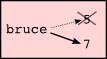
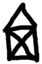
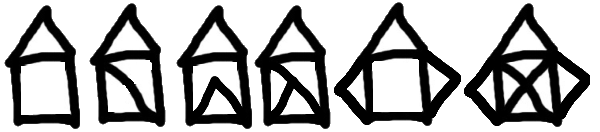

Computers are often used to automate repetitive tasks. Repeating identical or similar tasks without making errors is something that computers do well and people do poorly.
Repeated execution of a set of statements is called iteration. Because iteration is so common, Python provides several language features to make it easier. We’ve already seen the for statement in chapter 3. This the the form of iteration you’ll likely be using most often. But in this chapter we’ve going to look at the while statement — another way to have your program do iteration, useful in slightly different circumstances.
Before we do that, let’s just review a few ideas...
As we have mentioned previously, it is legal to make more than one assignment to the same variable. A new assignment makes an existing variable refer to a new value (and stop referring to the old value).
The output of this program is:
5 7
because the first time bruce is printed, its value is 5, and the second time, its value is 7.
Here is what reassignment looks like in a state snapshot:

With reassignment it is especially important to distinguish between an assignment statement and a boolean expression that tests for equality. Because Python uses the equal token (=) for assignment, it is tempting to interpret a statement like a = b as a boolean test. Unlike mathematics, it is not! Remember that the Python token for the equality operator is ==.
Note too that an equality test is symmetric, but assignment is not. For example, if a == 7 then 7 == a. But in Python, the statement a = 7 is legal and 7 = a is not.
Furthermore, in mathematics, a statement of equality is always true. If a == b now, then a will always equal b. In Python, an assignment statement can make two variables equal, but because of the possibility of reassignment, they don’t have to stay that way:
The third line changes the value of a but does not change the value of b, so they are no longer equal. (In some programming languages, a different symbol is used for assignment, such as <- or :=, to avoid confusion. Python chose to use the tokens = for assignment, and == for equality. This is a popular choice also found in languages like C, C++, Java, and C#.)
When an assignment statement is executed, the right-hand-side expression (i.e. the expression that comes after the assignment token) is evaluated first. Then the result of that evaluation is written into the variable on the left hand side, thereby changing it.
One of the most common forms of reassignment is an update, where the new value of the variable depends on its old value.
Line 2 means get the current value of n, multiply it by three and add one, and put the answer back into n as its new value. So after executing the two lines above, n will have the value 16.
If you try to get the value of a variable that doesn’t exist yet, you’ll get an error:
>>> w = x + 1 Traceback (most recent call last): File "<interactive input>", line 1, in NameError: name 'x' is not defined
Before you can update a variable, you have to initialize it, usually with a simple assignment:
>>> x = 0 >>> x = x + 1
This second statement — updating a variable by adding 1 to it — is very common. It is called an increment of the variable; subtracting 1 is called a decrement. Sometimes programmers also talk about bumping a variable, which means the same as incrementing it by 1.
Recall that the for loop processes each item in a list. Each item in turn is (re-)assigned to the loop variable, and the body of the loop is executed. We saw this example in an earlier chapter:
Running through all the items in a list is called traversing the list, or traversal.
Let us write a function now to sum up all the elements in a list of numbers. Do this by hand first, and try to isolate exactly what steps you take. You’ll find you need to keep some “running total” of the sum so far, either on a piece of paper, or in your head. Remembering things from one step to the next is precisely why we have variables in a program: so we’ll need some variable to remember the “running total”. It should be initialized with a value of zero, and then we need to traverse the items in the list. For each item, we’ll want to update the running total by adding the next number to it.
Incrementing a variable is so common that Python provides an abbreviated syntax for it:
>>> count = 0 >>> count += 1 >>> count 1 >>> count += 1 >>> count 2
count += 1 is an abreviation for count = count + 1 . We pronouce the operator as “plus-equals”. The increment value does not have to be 1:
>>> n = 2 >>> n += 5 >>> n 7
There are similar abbreviations for -=, *=, /=, //= and %=:
>>> n = 2 >>> n *= 5 >>> n 10 >>> n -= 4 >>> n 6 >>> n //= 2 >>> n 3 >>> n %= 2 >>> n 1
To write effective computer programs a programmer needs to develop the ability to trace the execution of a computer program. Tracing involves becoming the computer and following the flow of execution through a sample program run, recording the state of all variables and any output the program generates after each instruction is executed.
To understand this process, let’s trace the call to seq3np1(3) from the previous section. At the start of the trace, we have a local variable, n (the parameter), with an initial value of 3. Since 3 is not equal to 1, the while loop body is executed. 3 is printed and 3 % 2 == 0 is evaluated. Since it evaluates to False, the else branch is executed and 3 * 3 + 1 is evaluated and assigned to n.
To keep track of all this as you hand trace a program, make a column heading on a piece of paper for each variable created as the program runs and another one for output. Our trace so far would look something like this:
n output printed so far -- --------------------- 3 3, 10
Since 10 != 1 evaluates to True, the loop body is again executed, and 10 is printed. 10 % 2 == 0 is true, so the if branch is executed and n becomes 5. By the end of the trace we have:
n output printed so far -- --------------------- 3 3, 10 3, 10, 5 3, 10, 5, 16 3, 10, 5, 16, 8 3, 10, 5, 16, 8, 4 3, 10, 5, 16, 8, 4, 2 3, 10, 5, 16, 8, 4, 2, 1 3, 10, 5, 16, 8, 4, 2, 1.
Tracing can be a bit tedious and error prone (that’s why we get computers to do this stuff in the first place!), but it is an essential skill for a programmer to have. From this trace we can learn a lot about the way our code works. We can observe that as soon as n becomes a power of 2, for example, the program will require log2(n) executions of the loop body to complete. We can also see that the final 1 will not be printed as output within the body of the loop, which is why we put the special print function at the end.
Tracing a program is, of course, related to single-stepping through your code and being able to inspect the variables. Using the computer to single-step for you is less error prone and more convenient. Also, as your programs get more complex, they might execute many millions of steps before they get to the code that you’re really interested in, so manual tracing becomes impossible. Being able to set a breakpoint where you need one is far more powerful. So we strongly encourage you to invest time in learning using to use your programming environment (PyScripter, in these notes) to full effect.
There are also some great visualization tools becoming available to help you trace and understand small fragments of Python code. The one we recommend is at http://netserv.ict.ru.ac.za/python3_viz
We’ve cautioned against chatterbox functions, but used them here. As we learn a bit more Python, we’ll be able to show you how to generate a list of values to hold the sequence, rather than having the function print them. Doing this would remove the need to have all these pesky print functions in the middle of our logic, and will make the function more useful.
This chapter showed us how to sum a list of items, and how to count items. The counting example also had an if statement that let us only count some selected items. In the previous chapter we also showed a function find_first_2_letter_word that allowed us an “early exit” from inside a loop by using return when some condition occurred. We now also have break to exit a loop (but not the enclosing function, and continue to abandon the current iteration of the loop without ending the loop.
Composition of list traversal, summing, counting, testing conditions and early exit is a rich collection of building blocks that can be combined in powerful ways to create many functions that are all slightly different.
The first six questions are typical functions you should be able to write using only these building blocks.
Write a function to count how many odd numbers are in a list.
Sum up all the even numbers in a list.
Sum up all the negative numbers in a list.
Count how many words in a list have length 5.
Sum all the elements in a list up to but not including the first even number. (Write your unit tests. What if there is no even number?)
Count how many words occur in a list up to and including the first occurrence of the word “sam”. (Write your unit tests for this case too. What if “sam” does not occur?)
Add a print function to Newton’s sqrt function that prints out better each time it is calculated. Call your modified function with 25 as an argument and record the results.
Trace the execution of the last version of print_mult_table and figure out how it works.
Write a function print_triangular_numbers(n) that prints out the first n triangular numbers. A call to print_triangular_numbers(5) would produce the following output:
1 1
2 3
3 6
4 10
5 15
(hint: use a web search to find out what a triangular number is.)
Write a function, is_prime, which takes a single integer argument and returns True when the argument is a prime number and False otherwise. Add tests for cases like this:
test(is_prime(11), True)
test(is_prime(35), False)
test(is_prime(19911129), True)
The last case could represent your birth date. Were you born on a prime day? In a class of 100 students, how many do you think would have prime birth dates?
Revisit the drunk student problem from the exercises in chapter 3. This time, the drunk student makes a turn, and then takes some steps forward, and repeats this. Our social science student now records pairs of data: the angle of each turn, and the number of steps taken after the turn. Her experimental data is [(160, 20), (-43, 10), (270, 8), (-43, 12)]. Use a turtle to draw the path taken by our drunk friend.
Many interesting shapes can be drawn by the turtle by giving a list of pairs like we did above, where the first item of the pair is the angle to turn, and the second item is the distance to move forward. Set up a list of pairs so that the turtle draws a house with a cross through the centre, as show here. This should be done without going over any of the lines / edges more than once, and without lifting your pen.
Not all shapes like the one above can be drawn without lifting your pen, or going over an edge more than once. Which of these can be drawn?
Now read Wikipedia’s article(http://en.wikipedia.org/wiki/Eulerian_path) about Eulerian paths. Learn how to tell immediately by inspection whether it is possible to find a solution or not. If the path is possible, you’ll also know where to put your pen to start drawing, and where you should end up!
What will num_digits(0) return? Modify it to return 1 for this case. Why does a call to num_digits(-24) result in an infinite loop? (hint: -1//10 evaluates to -1) Modify num_digits so that it works correctly with any integer value. Add these tests:
test(num_digits(0), 1)
test(num_digits(-12345), 5)
Write a function num_even_digits(n) that counts the number of even digits in n. These tests should pass:
test(num_even_digits(123456), 3)
test(num_even_digits(2468), 4)
test(num_even_digits(1357), 0)
test(num_even_digits(0), 1)
Write a function sum_of_squares(xs) that computes the sum of the squares of the numbers in the list xs. For example, sum_of_squares([2, 3, 4]) should return 4+9+16 which is 29:
test(sum_of_squares([2, 3, 4]), 29)
test(sum_of_squares([ ]), 0)
test(sum_of_squares([2, -3, 4]), 29)
You and your friend are in a team to write a two-player game, human against computer, such as Tic-Tac-Toe / Noughts and Crosses. Your friend will write the logic to play one round of the game, while you will write the logic to allow many rounds of play, keep score, decide who plays, first, etc. The two of you negotiate on how the two parts of the program will fit together, and you come up with this simple scaffolding (which your friend will improve later):